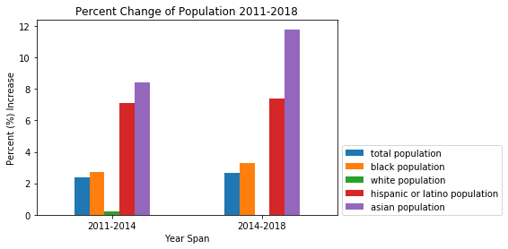

The percent change of each of the analyzed races can be seen in the below graph. The bar chart highlights the two time spans: 2011-2014 and 2014-2018. The two fastest changing races the data showed were the Asian population (11.8%) and Hispanic & Latino (7.4%) increase from 2014-2018. It was also interesting to note that White is the lowest growing population with a (0.01%) increase from 2014-2018.
